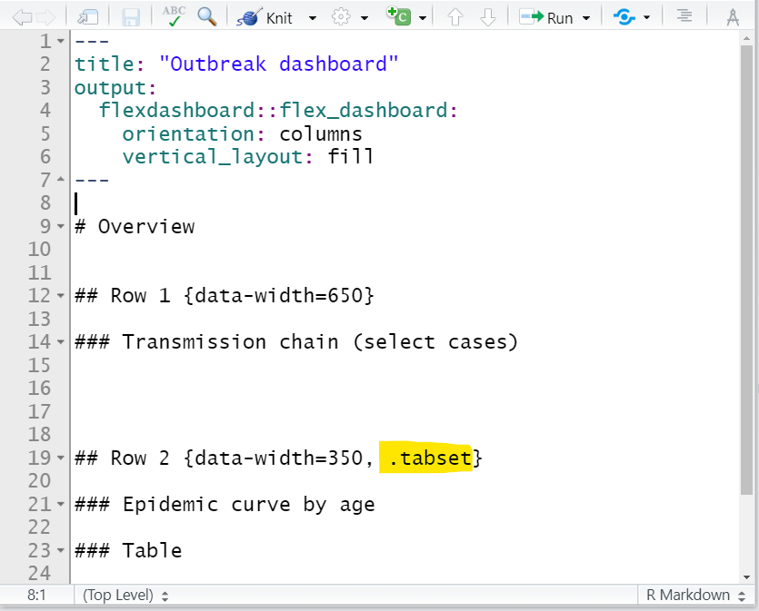

43 Dashboards with R Markdown
THIS PAGE IS UNDER CONSTRUCTION

This page will cover the basic use of the flexdashboard package. This package allows you to easily format R Markdown output as a dashboard with panels and pages. The dashboard content can be text, static figures/tables or interactive graphics.
Advantages of flexdashboard:
- Requires minimal non-standard R coding - with very little practice you can likely create a dashboard
- The dashboard can be emailed as an HTML report - no server required
- You can combine flexdashboard with shiny, ggplotly, and other “html widgets” to add interactivity
Disadvantages of flexdashboard:
- Interactivity can be constrained
- Less customization possible than if using Shiny directly to create the dashboard
Very comprehensive tutorials on using flexdashboard that informed this page can be found in the Resources section. Below we describe the core features and give an example of building a dashboard to explore an outbreak, using the case linelist data.
43.1 Preparation
Load packages
In this handbook we emphasize p_load() from pacman, which installs the package if necessary and loads it for use. You can also load installed packages with library() from base R. See the page on R basics for more information on R packages.
pacman::p_load(
rio, # data import/export
here, # locate files
tidyverse, # data management and visualization
flexdashboard, # dashboard versions of R Markdown reports
shiny, # interactive figures
plotly # interactive figures
)Import data
We import the dataset of cases from a simulated Ebola epidemic. If you want to download the data to follow step-by-step, see instructions in the Download handbook and data page. The dataset is imported using the import() function from the rio package. See the page on Import and export for various ways to import data.
# import the linelist
linelist <- import("linelist_cleaned.xlsx")The first 50 rows of the linelist are displayed below.
43.2 New R Markdown
After you have installed the package, create a new R Markdown file by clicking through to File > New file > R Markdown.

In the window that opens, select “From Template” and select the “Flex Dashboard” template. You will then be prompted to name the document. In this page’s example, we will name our R Markdown as “outbreak_dashboard.Rmd”.

43.3 The script
The script is a R Markdown script, and so has the same components and organization as described in the page on R Markdown reports. We briefly re-visit these below:
YAML
At the top, the “YAML” header must begin with three dashes --- and must close with three dashes ---. YAML parameters comes in key:value pairs. The placement of colons in YAML is important - the key:value pairs are separated by colons (not equals signs!).
The YAML should begin with metadata for the document. The order of these primary YAML parameters (not indented) does not matter. For example:
title: "My document"
author: "Me"
date: "`r Sys.Date()`"You can use R code in YAML values by putting it like in-line code (preceeded by r within backticks) but also within quotes (see above for Date).
A required YAML parameter is output:, which specifies the type of file to be produced (e.g. html_document, pdf_document, word_document, or powerpoint_presentation). For flexdashboard this parameter value is a bit confusing - it must be set as output:flexdashboard::flex_dashboard. Note the single and double colons. This YAML parameter is often followed by an additional colon and indented sub-parameters (see orientation: and vertical_layout: parameters below).
title: "My dashboard"
author: "Me"
date: "`r Sys.Date()`"
output:
flexdashboard::flex_dashboard:
orientation: rows
vertical_layout: scrollAs shown above, indentations (2 spaces) are used for sub-parameters. In this case, do not forget to put an additional colon after the primary, like key:value:.
If appropriate, logical values should be given in lowercase (true, false, null). If a colon is part of your value (e.g. in the title) put the value in quotes. See the examples in sections below.
Narrative text
Outside of an R code “chunk”, you can write narrative text. As described in the page on R Markdown reports, you can italicize text by surrounding it with one asterisk (*), or bold by surrounding it with two asterisks (**). Recall that bullets and numbering schemes are sensitive newlines, indentation, and finishing a line with two spaces.
You can also insert in-line R code into text as described in the R Markdown reports page, by surrounding the code with backticks and starting the command with r (see example scripts below).
Headings
Different heading levels are established with different numbers of hash symbols, as described in the R Markdown reports page.
In flexdashboard, a primary heading (#) creates a “page” of the dashboard. Second-level headings (##) create a column or a row depending on your orientation: parameter (see details below). Third-level headings create panels for plots, charts, tables, text, etc. and are made with ###.
# First-level heading (page)
## Second level heading (row or column)
### Third-level heading (pane for plot, chart, etc.)Code chunks
“Chunks” of R code work just like R scripts. They are created with three back-ticks and curly brackets with a lowercase r within. The chunk is closed with three backticks. You can create a new chunk by typing it out yourself, by using the keyboard shortcut “Ctrl + Alt + i” (or Cmd + Shift + r in Mac), or by clicking the green ‘insert a new code chunk’ icon at the top of your script editor.
43.4 Attributes
As in a normal R markdown, you can specify attributes to apply to parts of your dashboard by including key=value options after a heading within curly brackets { }. For example, in a typical HTML R Markdown report you might organize sub-headings into tabs with ## My heading {.tabset}.
Attributes specific to flexdashboard include:
-
{data-width = }and{data-height = }set relative size of charts, columns, rows laid out in the same dimension (horizontal or vertical). Absolute sizes are adjusted to best fill the space on any display device thanks to the flexbox engine.- Height of charts also depends on whether you set the YAML parameter
vertical_layout: fillorvertical_layout: scroll. If set to scroll, height will reflect the traditionalfig.height =option in the R code chunk.
- See complete size documentation at the flexdashboard website
- Height of charts also depends on whether you set the YAML parameter
-
{data-orientation=}Set to eitherrowsorcolumns. If your dashboard has multiple pages, add this attribute to each page to indicate orientation.
-
{.hidden}Use this to exclude a specific page from the navigation bar
-
{data-navbar=}Use this in a page-level heading to nest it within a navigation bar drop-down menu. Provide the name (in quotes) of the drop-down menu. See example below.
43.5 Layout
Adjust the layout of your dashboard in the following ways:
- Add pages, columns/rows, and charts with R Markdown headings (e.g. #, ##, or ###)
- Adjust the YAML parameter
orientation:to eitherrowsorcolumns
- Specify whether the layout fills the browser or allows scrolling
- Add tabs to a particular section heading
Pages
First-level headings (#) in the R Markdown will represent “pages” of the dashboard. By default pages will appear in a navigation bar along the top of the dashboard.


You can group pages into a “menu” within the navigaton bar by adding the attribute {data-navmenu=} to the page heading. Be careful - do not include spaces around the equals sign otherwise it will not work!


You can also transfer a page into a “sidebar” on the left side of the dashboard by adding the {.sidebar} attribute. It can hold text (viewable from any page), or if you have integrated shiny interactivity it could hold user-input controls such as sliders or drop-down menus.


Orientation
Set the orientation: yaml parameter to indicate how your second-level (##) R Markdown headings should be interpreted - as either orientation: columns or orientation: rows.
Second-level headings (##) will be interpreted as new columns or rows based on this orientation setting.
If you set orientation: columns, second-level headers will create new columns in the dashboard. The below dashboard has one page, containing two columns, with a total of three panels. You can adjust the relative width of the columns with {data-width=} as shown below.


If you set orientation: rows, second-level headers will create new rows instead of columns. Below is the same script as above, but orientation: rows so that second-level headings produce rows instead of columns. You can adjust the relative height of the rows with {data-height=} as shown below.


If your dashboard has multiple pages, you can designate the orientation for each specific page by adding the {data-orientation=} attribute the header of each page (specify either rows or columns without quotes).
43.5.1 Tabbed panels
You can divide content into tabs with the {.tabset} attribute, as in other HTML R Markdown outputs.
Simply add this attribute to the desired heading. Sub-headings under that heading will be displayed as tabs. For example, in the example script below the right-most column (##) is modified so that the epidemic curve and table panes (###) are displayed in tabs.

If you want a single pane (###) to have tabs, you can add the {.tabset} attribute to it, and include the pane-tab content beneath it under sub-headings (####).
43.6 Adding content
Just like another R Markdown output, content can be created or imported using R code chunks.
You may elect to have all code within the R Markdown flexdashboard script. Alternatively, to have a more clean and concise dashboard script you may choose to call upon code/figures that are hosted or created in external R scripts. This is described in greater detail in the R Markdown reports page.
Below we give brief examples of both approaches.
43.9 Resources
Excellent tutorials that informed this page can be found below. If you review these, most likely within an hour you can have your own dashboard.
https://bookdown.org/yihui/rmarkdown/dashboards.html
https://rmarkdown.rstudio.com/flexdashboard/